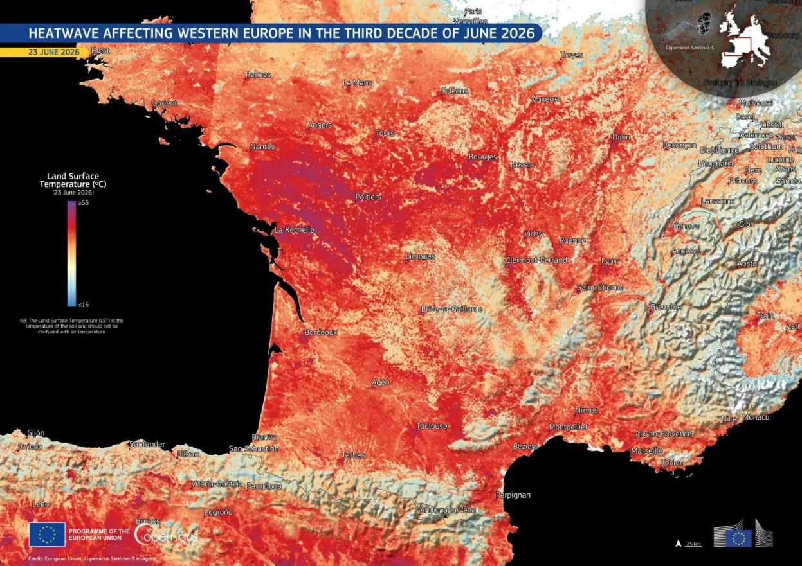
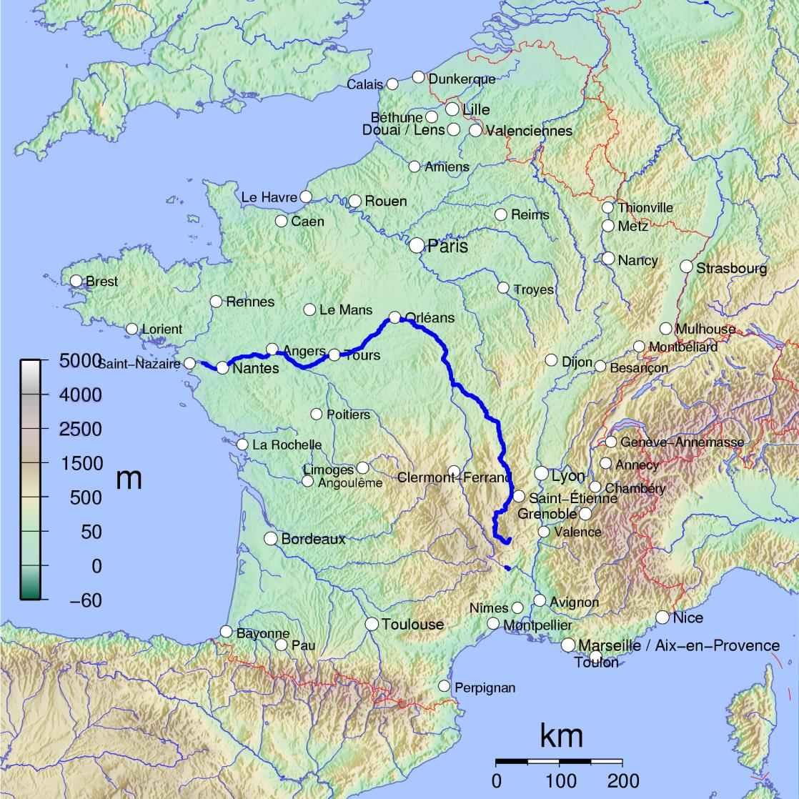

Dear Friends,
Today is the first day of summer vacation for French schoolchildren, and the first day of the Tour de France (which starts in Barcelona and ends in Paris on July 26).
It is also Independence Day in the United States, so named because the Declaration of Independence from Britain was signed by the delegates of the Second Continental Congress in Philadelphia on this day 250 years ago.
We could not have won the Revolutionary War, which officially ended with the signature of the Treaty of Paris in 1783, without France’s help.
Vive l’amitié franco-américaine !
La Canicule
France – and the rest of Western Europe – experienced a record-breaking heatwave that lasted 12 very long days and nights from June 16 through June 27.
In France, a canicule (heatwave) is officially defined as three consecutive days when the high temperature each day is 30 degrees Celsius (86 degrees Fahrenheit) or above and the low temperature does not fall below 20 degrees Celsius (68 degrees Fahrenheit). Nights when the temperature does not drop below 20 degrees are appropriately known as nuits tropicales (tropical nights).

France recorded its hottest day on record on June 24 with an average day-night temperature of 30 degrees Celsius (86 degrees Fahrenheit). The average low temperature of 22 degrees Celsius (72 degrees Fahrenheit) also set a national record. The high temperature in Paris on June 24 was 41 degrees Celsius (106 degrees Fahrenheit).
There were multiple wild fires across the country. Thousands of homes were without electricity for sweltering days and nights on end. Sixty people drowned while trying to cool off in rivers and lakes. The number of heat-related deaths of the elderly– especially those living alone – has yet to be counted. In 2003, 15,000 deaths in France were attributed to the heatwave, which occurred in August.
La Fête de la Musique, normally held on June 21, was cancelled in many cities and towns across France because of the extreme heat. Many schools were closed. Trains were cancelled because they had no air conditioning.
And of course, the tourists suffered, and there were plenty of them in Paris in June. During the heatwave, museums (see below) and cinemas were places of refuge because they are air-conditioned. But the tourists still lined up in droves to get into Notre-Dame.
Prediction: The tourists who were in Paris during the canicule will not be coming back next June – much less in July or August.
Et maintenant ?

The dividing line between the hot Mediterranean south (le Midi) and the cooler north had gradually crept north to the Loire river, the longest river in France – but that boundary doesn’t seem to apply any more.
In the United States, 90% of homes have air conditioning. In France, only 25% of homes do. (We only survived this heatwave because we have a mobile AC unit in our bedroom which enabled us to sleep at night.) As reported in the Wall Street Journal among other publications, the French have long had an aversion to air conditioning, which is shared by the Paris city government – which has been run by a coalition of Socialists and Greens since 2001. The argument is that air conditioning requires lots of energy which generates more greenhouse gases which deplete the ozone layer which protects the earth from the heat of the sun. Also, exhaust from AC units in every apartment would make the city hotter. The way to combat global warming, the argument goes, is to have better insulation in houses, to close the shutters, and to plant more trees (végétaliser). In her two terms as mayor of Paris (2014-26), Anne Hidalgo planted 150,000 trees around the city. The new mayor, Emmanuel Grégoire, plans to plant many more, including 150 more trees around Notre-Dame Cathedral. There is even talk about turning the Boulevard Périphérique ring road around Paris into an “urban boulevard” lined with trees.
All of this is well and good, and we definitely prefer to walk along a sidewalk shaded by trees than under the beating sun, but what about when you are inside? Insulation might help, but it is not enough. Our apartment building, which like so many others in Paris was built in the late 19th century following the Grands Travaux of Baron Haussmann, is covered in pierre de taille (cut stone), as required by Haussmann’s rules. If we close the shutters to keep the sun from beating on the windows and heating the apartment, it does a great job of keeping the apartment cool – for three days. After that, the apartment becomes an oven and we bake.
Up until now, air conditioning (climatisation) did not figure into the plans of the Ville de Paris. By popular demand, that is bound to change. It is inevitable that the City of Paris will start installing air-conditioning in all hospitals, schools and nursing homes (EHPAD). More challenging will be the installation of AC across the enormous parc of HLM (habitation à loyer modéré – or low-income housing, now called logement social). There were 272,000 units of “social housing” in Paris intra muros in 2024, and many more in the surrounding suburbs (la banlieue). The city of Saint-Denis alone, just to the north of Paris and best known for its Gothic basilica and sports stadium, had over 240,000 social housing units in 2024. France as a whole had 5.4 million social housing units with controlled rent as of January 1, 2024, equivalent to 15.9% of households. I doubt many are equipped with AC.
Even installing AC in a privately-owned apartment in Paris can be a challenge. While installation of the indoor unit requires no specific authorization since it is in a private area inside the co-propriété, installation of the outdoor unit may require special authorization from the condominium association and even from the Ville de Paris.
Cela change la donne
It has been said that “no society is more than 9 meals away from anarchy.” The same could arguably be said for heatwaves.
The canicule was a game-changer. To use an awkward metaphor, air-conditioning France is just the tip of the iceberg. To paraphrase the Minister of Ecological Transition (a once awkward title that these days seems apt) Monique Barbut, “On ne combat pas des feux de forêt avec des climatiseurs” (“You don’t fight forest fires with air-conditioners”).
While the health and safety of the populace are the top priority, and France will get air-conditioned as a result, the global warming that causes these heatwaves has many far-reaching effects: forests are burning, crops are shriveling in the fields, cattle are dying of heatstroke, rivers and lake are drying up, fish are suffocating, roads are melting, railroad tracks are warping, electrical wires are frying. People are moving from the Riviera to Brittany and property values are shifting. France may not remain the world’s number tourist destination for much longer.
To address the challenges of adaptation to the new normal will require huge investments in infrastructure (at a time when the French coffers are empty and the national debt is at an all-time high), innovation, and especially leadership.
The canicule could also be a political game-changer. While Frenchmen will debate endlessly about what is the right immigration policy and retirement age, they all agree that they don’t want to suffer through more canicules and their consequences.
Climate change had not been a hot-button issue (pardon the pun) in the run-up to the presidential election next April. It is now. How the candidates address it may be another game-changer.
Marine Le Pen of the far-right Rassemblement National was the first out of the blocks when she announced on June 23 that if she were elected president she would launch a “grand plan de climatisation”. She estimates that France needs 40 million individual air conditioning units, roughly half for the public sector and half for the private. (BTW, on July 7 the Court of Appeals will render its decision as to whether or not she can run for president next year.)
Stay tuned for more declarations from other presidential hopefuls about the best way to adapt to the new, overheated normal.
Mais…memories are short.